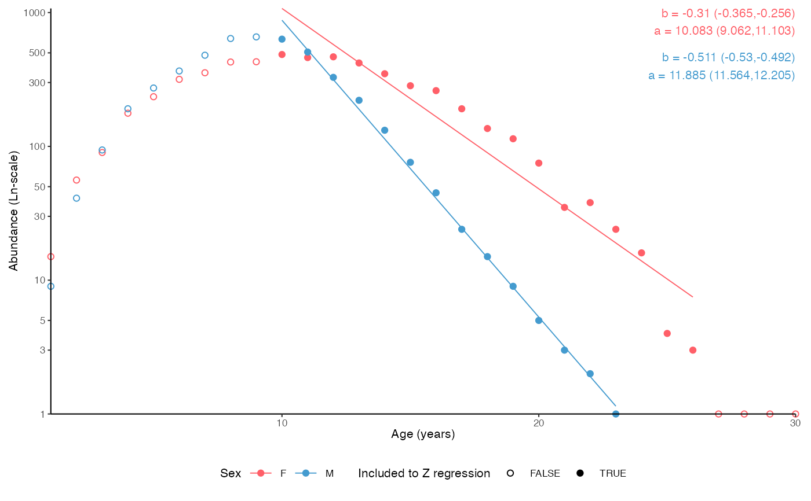
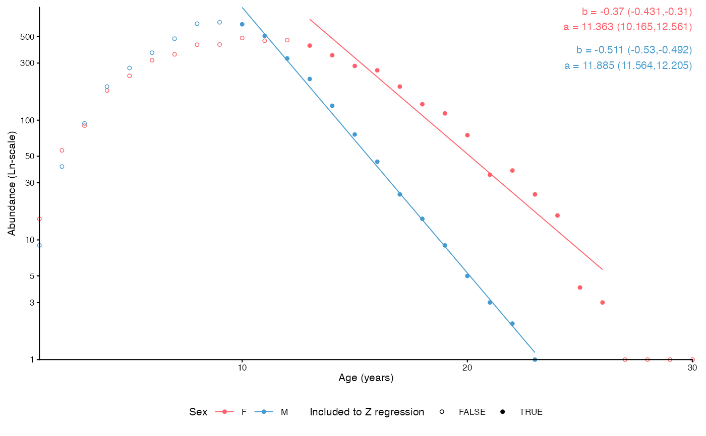

Plot a catch curve to estimate instantaneous total mortality (Z) using age data
Usage
plot_catchcurve(
dt,
age = "age",
sex = "sex",
time = NULL,
age.range = NULL,
female.sex = "F",
male.sex = "M",
split.by.sex = FALSE,
base_size = 8,
legend.position = "bottom"
)Arguments
- dt
A data.frame, tibble or data.table
- age
Character argument giving the name of the age column in
dt- sex
Character argument giving the name of the sex column in
dt. Ignored ifsplit.by.sex == FALSE.- time
Split analysis by time? If
NULL, all data are assumed to stem from one time point. Using a character argument giving the name of a time column splits the analysis by unique values in that column and produces a faceted plot.- age.range
Defines the age range to be used for Z estimation. If
NULL, all ages are used. If a numeric vector of length 2, the first number defines the minimum age to include and the last number the maximum age. It is also possible to use differing ranges by sex whensplit.by.sex = TRUE: use a named list of length two with names referring tofemale.sexandmale.sex. Provide a numeric vector of length 2 to each element (first number defining the minimum age to include and the last number the maximum age). See Examples.- female.sex, male.sex
A character or integer denoting female and male sex in the
sexcolumn ofdt, respectively.- split.by.sex
Logical indicating whether the result should be split by sex.
- base_size
Base size parameter for ggplot. See ggtheme.
- legend.position
Position of the ggplot legend as a character. See ggtheme.
Details
Calculates and plots the basic log-linearized catch curve to estimate instantaneous mortality. See e.g. Ogle (2013).
Examples
# Catch curve including all ages
data(survey_ghl)
plot_catchcurve(survey_ghl)
#> $plot
#>
#> $text
#> [1] "Instantenous total mortality (Z) estimated using a catch curve and\nage range .\n\nZ = 0.19 (0.123-0.257 95% CIs)\nN at age 0 = 1448 (449-4674 95% CIs)\nLongevity = 38.3 years (23.8 - 68.8 95% CIs)\n\n"
#>
#> $params
#> # A tibble: 2 × 8
#> sex term estimate std.error statistic p.value conf.low conf.high
#> <chr> <chr> <dbl> <dbl> <dbl> <dbl> <dbl> <dbl>
#> 1 both (Intercept) 7.28 0.573 12.7 2.25e-13 6.11 8.45
#> 2 both age -0.190 0.0328 -5.79 2.85e- 6 -0.257 -0.123
#>
#> $definitions
#> $definitions$age.range
#> NULL
#>
#>
# \donttest{
# Specific ages
plot_catchcurve(survey_ghl, age.range = c(10,26))
#> $plot
#>
#> $text
#> [1] "Instantenous total mortality (Z) estimated using a catch curve and\nage range 10-26.\n\nZ = 0.356 (0.312-0.401 95% CIs)\nN at age 0 = 68394 (29985-156005 95% CIs)\nLongevity = 31.2 years (25.7 - 38.3 95% CIs)\n\n"
#>
#> $params
#> # A tibble: 2 × 8
#> sex term estimate std.error statistic p.value conf.low conf.high
#> <chr> <chr> <dbl> <dbl> <dbl> <dbl> <dbl> <dbl>
#> 1 both (Intercept) 11.1 0.387 28.8 1.54e-14 10.3 12.0
#> 2 both age -0.356 0.0207 -17.2 2.81e-11 -0.401 -0.312
#>
#> $definitions
#> $definitions$age.range
#> [1] 10 26
#>
#>
# Split by sex
plot_catchcurve(survey_ghl, age.range = c(10,26), split.by.sex = TRUE)
#> $plot

#>
#> $text
#> [1] "Instantenous total mortality (Z) estimated using a catch curve and\nage range 10-26 for both sexes.\n\nFemales:\nZ = 0.31 (0.256-0.365 95% CIs)\nN at age 0 = 23925 (8625-66368 95% CIs)\nLongevity = 32.5 years (24.8 - 43.4 95% CIs)\n\nMales:\nZ = 0.511 (0.492-0.53 95% CIs)\nN at age 0 = 145002 (105241-199785 95% CIs)\nLongevity = 23.3 years (21.8 - 24.8 95% CIs)"
#>
#> $params
#> # A tibble: 4 × 8
#> sex term estimate std.error statistic p.value conf.low conf.high
#> <chr> <chr> <dbl> <dbl> <dbl> <dbl> <dbl> <dbl>
#> 1 F (Intercept) 10.1 0.479 21.1 1.49e-12 9.06 11.1
#> 2 F age -0.310 0.0257 -12.1 3.87e- 9 -0.365 -0.256
#> 3 M (Intercept) 11.9 0.147 80.8 8.62e-18 11.6 12.2
#> 4 M age -0.511 0.00866 -59.0 3.72e-16 -0.530 -0.492
#>
#> $definitions
#> $definitions$age.range
#> [1] 10 26
#>
#>
# Split by sex, separate age.range
plot_catchcurve(survey_ghl,
age.range = list("F" = c(13,26), "M" = c(10,26)),
split.by.sex = TRUE)
#> $plot

#>
#> $text
#> [1] "Instantenous total mortality (Z) estimated using a catch curve and\nage range for females and for males.\n\nFemales:\nZ = 0.37 (0.31-0.431 95% CIs)\nN at age 0 = 86119 (25990-285354 95% CIs)\nLongevity = 30.7 years (23.6 - 40.5 95% CIs)\n\nMales:\nZ = 0.511 (0.492-0.53 95% CIs)\nN at age 0 = 145002 (105241-199785 95% CIs)\nLongevity = 23.3 years (21.8 - 24.8 95% CIs)"
#>
#> $params
#> # A tibble: 4 × 8
#> sex term estimate std.error statistic p.value conf.low conf.high
#> <chr> <chr> <dbl> <dbl> <dbl> <dbl> <dbl> <dbl>
#> 1 F (Intercept) 11.4 0.550 20.7 9.51e-11 10.2 12.6
#> 2 F age -0.370 0.0276 -13.4 1.38e- 8 -0.431 -0.310
#> 3 M (Intercept) 11.9 0.147 80.8 8.62e-18 11.6 12.2
#> 4 M age -0.511 0.00866 -59.0 3.72e-16 -0.530 -0.492
#>
#> $definitions
#> $definitions$age.range
#> $definitions$age.range$F
#> [1] 13 26
#>
#> $definitions$age.range$M
#> [1] 10 26
#>
#>
#>
# }